4.设计向导
4.1 纬地操作步骤
衔接上一步操作
接上一章的纬地操作，我假设你是一路看着过来的，也就是说，中间你可能关闭过电脑，那么现在重启打开电脑，我们要如何继续上一次的工作呢？
首先，点击项目-打开项目：
然后找到项目文件所在的位置，选中，打开：
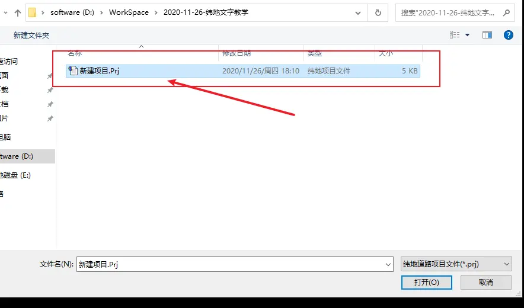
打开之后就已经接着上一次的工作了。
但现在 CAD 窗口还是空空如也，什么都没有，地形图也没有打开。不过我们已经不需要打开地形图了，只有做平面选线的时候才需要打开地形图，或者是你自己想熟悉一下地形图，你可以打开。现在做设计向导，就无需打开。
路线参数设置
然后现在开始做设计向导，设计向导这部分主要就是填入数据，所以这部分内容主要就是查询规范，下面的内容展示查询规范的过程。
点击项目-设计向导：
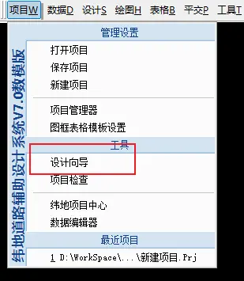
弹出这个向导的窗口：
然后接下来就是填数据了，第一步这里，其实没有什么需要填写的，就是看你设计的是什么类型的路线，你是设计公路还是城市道路，这个需要你自己选择了，我们这里就选择公路。其它就不需要填写了。
这里可以注意到一个文件，.pm 文件，这个文件是之前生成的，所以如果你没有这个文件，那么设计向导就会出现致命错误。
如果一直重复出现致命错误，大概率就是因为缺失了某些文件。
项目分段设置
这里需要选择你自己设计的公路等级和设计车速。
路幅及断面形式设置
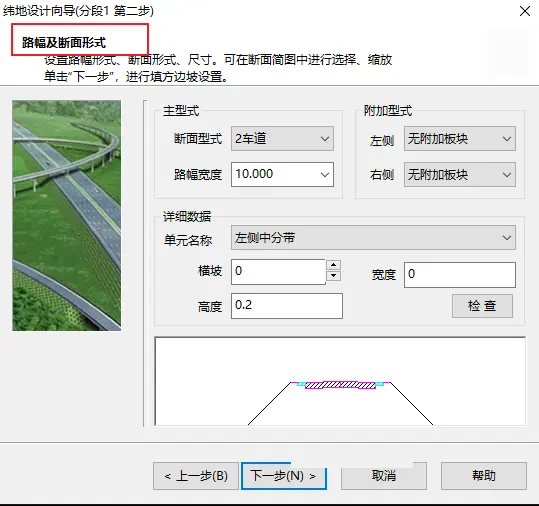
这里注意看标题，就是你设计的横断面的形式了，这些数据是需要你自己设计，然后填入的。怎么设计，就需要查规范了：
我们翻开《公路路线设计规范》JTG D20-2017，第六章，公路横断面，第六章前面是对横断面的一些说明，大家没事的时候，多翻翻，可以更加深对横断面设计的理解。
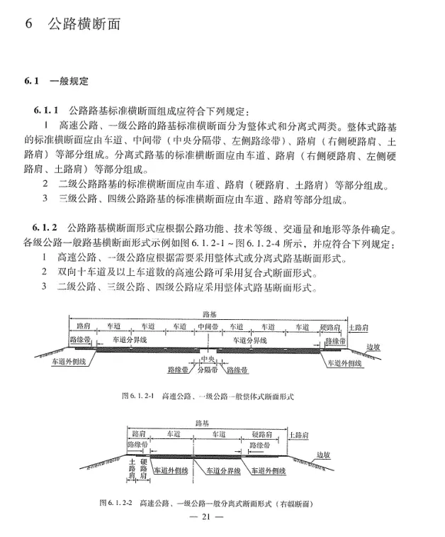
这里我们设计的是二级公路，那么就找与二级公路相关的说明：
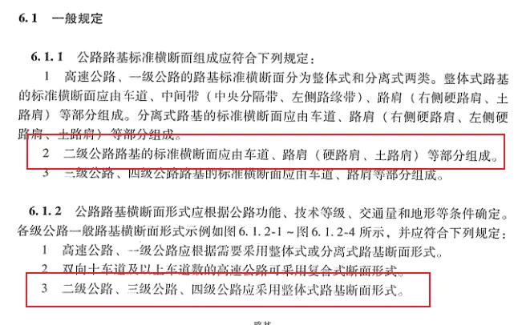
从这里（得把我圈起来的文字看或者读一遍，你才知道我是怎么确定的，我默认你已经看了上图勾出来的，下面的情况类似），可确定我们应该使用整体式路基断面。我们继续往下看：
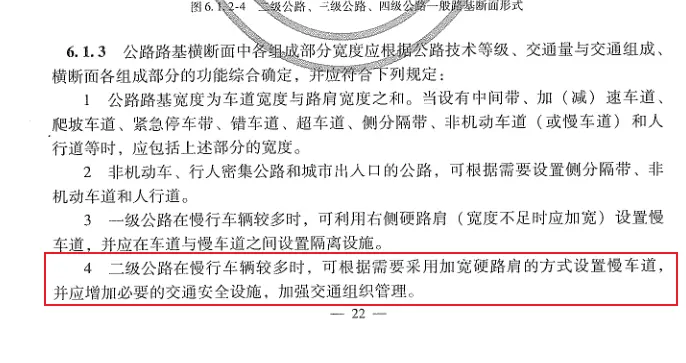
这里就需要车流量的数据了，这个是需要去调查得到的，规范上是翻不到的。我们演示就不需要加宽路肩了。继续往下翻规范：
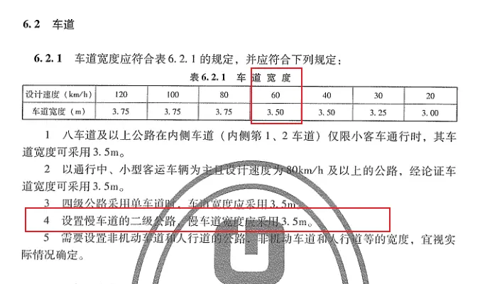
从这里可以判断，我们的车道宽度得 3.5m。继续往下看：
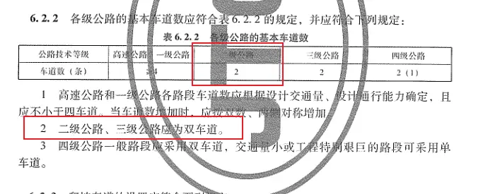
从这里知道，我们要设计两条车道。
到现在我们确定了哪些东西？
整体式路基
两条车道，每条 3.5m 宽
然后，现在回到纬地上看看：
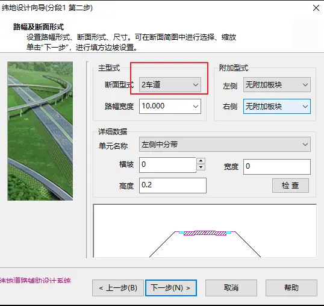
好吧，只能选一个 2 车道，还是默认选的。这是因为纬地其实是自动绑定了规范的，当你第一步选择公路主线，第二步选择公路等级（我们选二级公路）、设计车速（我们选择了 60 km/h），然后纬地就自动查找规范，自动帮你填好后面的数据了。
回想一下我们是怎么设计出来整体式路基、两车道、3.5m的？
根据公路等级确定了整体式路基和车道数量，根据设计车速确定了车道宽度。
我们接着往下看规范：
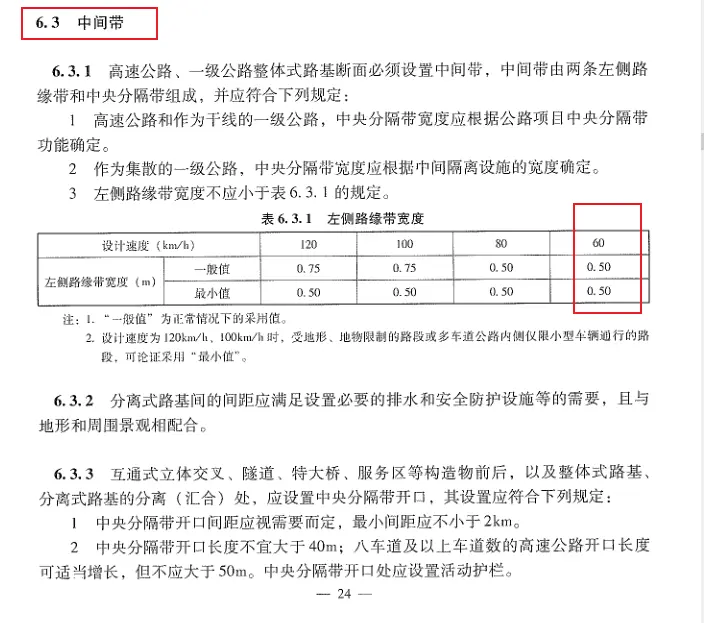
到了如何确定中间带了，我们是 60km/h 的设计车速，不过我们是二级公路，没有要求必须要设置中间带，那么现在中间带就是 0m 了，也就是不设置，因为没钱，你开车的自己好自为之。
这里就是个人的选择了，毕竟没钱，到时候在路上多贴上限速的标牌，多设置几个摄像头，不会相撞就好。
想必看到这里，大家已经不用再继续看我废话了，知道横断面设计的车道宽度、车道数量、路肩、中间带、路供坡度等等这些部分的参数怎么设计的了吧？多翻翻规范就知道了。
好我们再看一个路肩，往下翻规范：
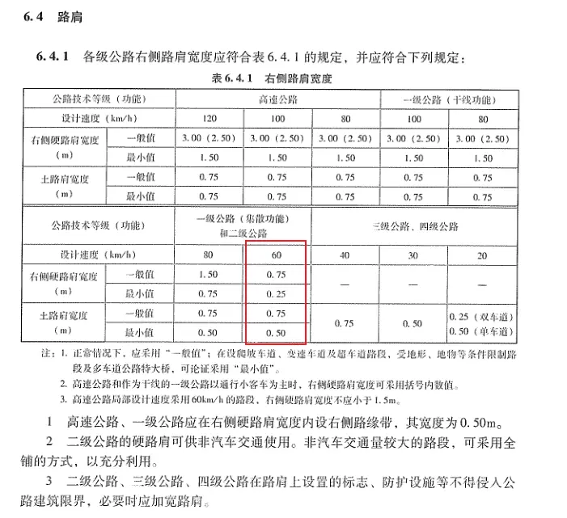
路肩可以宽一点，都取一般值，土路肩+硬路肩=0.75+0.75=1.5m，这个只是右侧的，左侧也是 1.5m。
好了，现在我们已经把横断面的大概形式已经设计出来了：
0.75(左侧土路肩)+0.75(左侧硬路肩)+3.5(左侧行车道)+3.5(右侧行车道)+0.75（右侧硬路肩）+0.75（右侧土路肩）=10m。
所以呢，分别选中下图中的这些数据，依次填入，然后路幅宽度就会自动计算出来了。或者你可以选预设的路幅宽度，纬地会自动按预设的分配给每个部分。
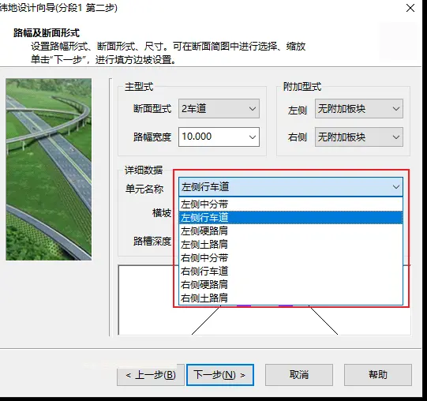
这里还需要填个横坡，也是一样，查规范：
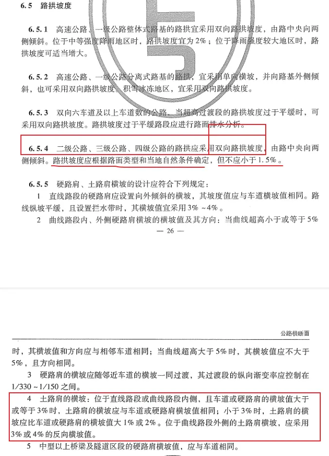
这里有路供横坡和路肩横坡的区分，大家不知道可以自行研究一下……
路供就是把路面做成倾斜一点，利于排水，免得下雨的时候积水太多，影响车行。
由于二级公路规定是双向横坡，也就是两条车道都要倾斜，但是我们又没有中间带，那么就只能中间高，往路的两边倾斜，这样就可以让水排出去。所以这种中间高两边低的横坡，也叫人字坡。如果有中间带，可以在中间带下面设置水管什么的，水往中间带流的时候，可以流到水管里面，然后进过水管，排除路外。
总之呢，路供就是为了排水用的。
其它的其实我觉得没有什么说的了，我这里就是给大家展示一下这些数据是怎么找出来的，怎么设计出来，就是查规范，然后结合实际情况。说到结合实际情况这几个字，有同学就头疼，“哎呀，我什么都会，就是不会结合实际情况……”，那你就按规范的数值填，也是造价多几个 0 或者少几个 0 的问题而已。
小结
读到这里，大家再回过头来看看《公路路线设计规范》JTG D20-2017，第六章公路横断面的目录。
你看，目录上都写得清清楚楚，车道怎么设计出来的，中间带要不要设置，路肩要不要设置，宽度应该是多少才合理，路供横坡应该是多少。
填方边坡设置
补充知识
讲填方边坡之前，先熟悉熟悉路基结构图：
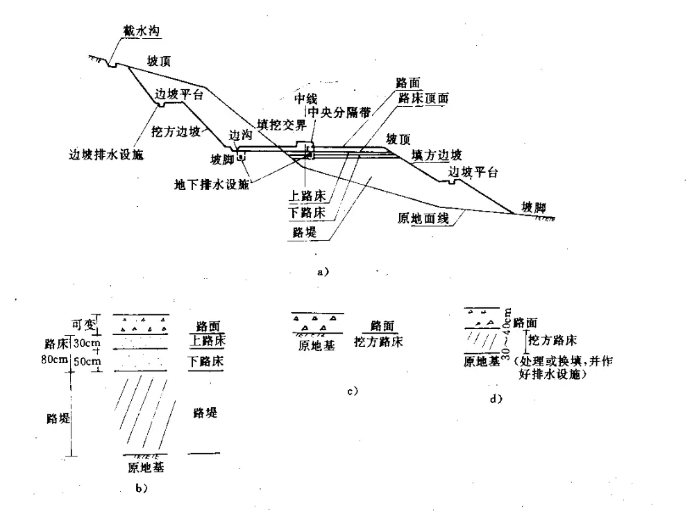
图片来自《路基设计手册》第二版
上图是路基每个部分的专业名词即对应部位。大家知道这些专业名词的具体部位，看规范也会理解深刻一点。
下面继续纬地的操作
下一步，填方边坡：
这里的数据应该去哪里找？
那就需要用到另一本规范了：《公路路基设计规范》JTG D30-2015
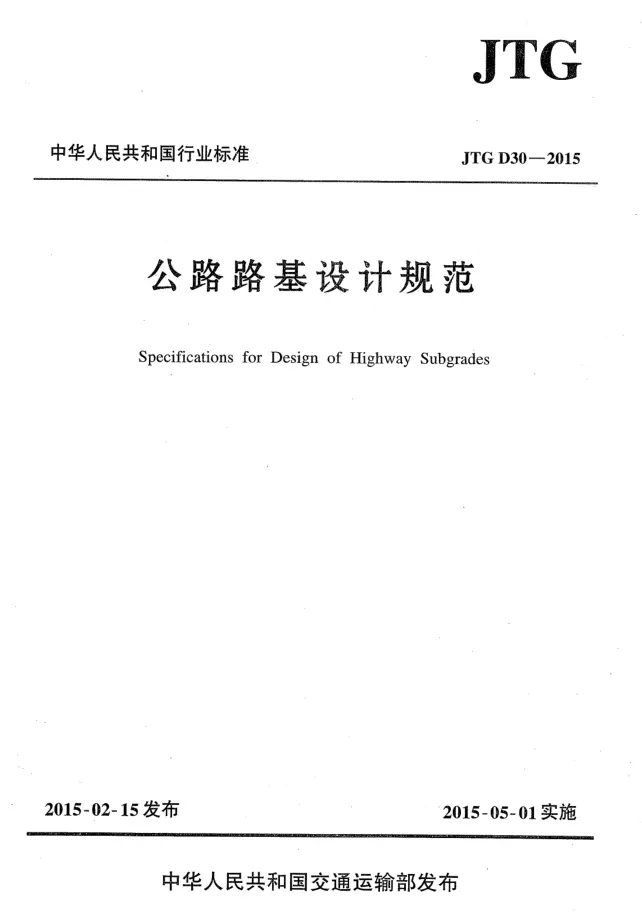
上个版本是《公路路基设计规范》JTG D30-2004，已经弃用，规范还是要看最新版的。
现在来翻翻这本书的第三章——一般路基
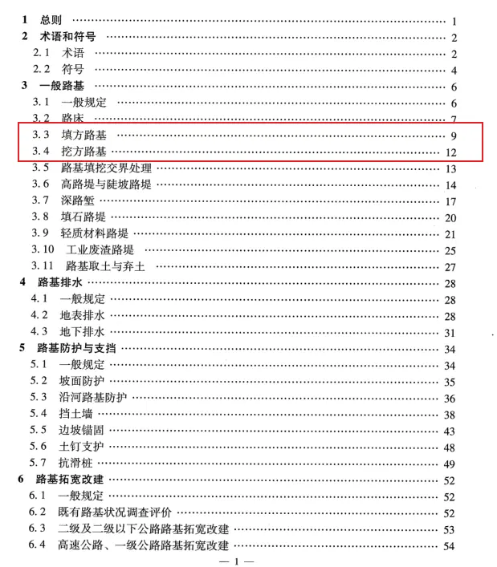
对了，如果不知道规范中说的路堤和路堑是什么（这一点当然不会不知道，就是怕有时候忘记了弄混淆了，所以规范的前面就给你说明了路堤路堑的概念。）
坡率 P
好了，现在我们需要填写填方边坡的数据，就翻到填方边坡：
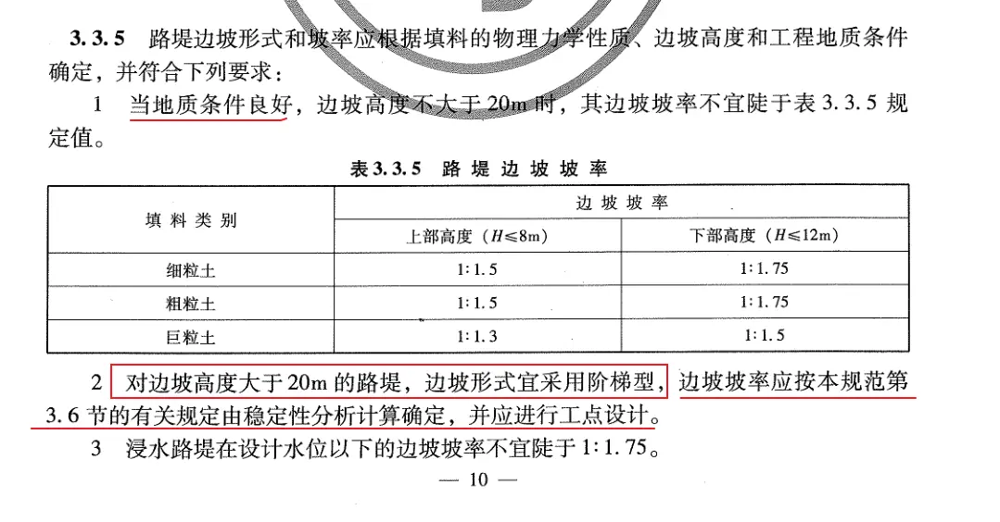
这里给出的上部高度，就是纬地上的 H1，下部高度就是 H2。比值就是坡率比，注意看 P1 的括号里面是（1:X）然后我们填入的值就是 X 的值。
我这里点击了下图中右侧的数据部分，所以图上显示的是右侧的边坡，如果你点击左侧的数据，那么就是左边坡。（这里左侧、右侧不是方向，注意看下图中窗口上显示的文字。）
由《公路路基设计规范》表 3.3.5 我们可以知道，这里的坡度 P1 应该是 1:1.5，P2 应该是 1:1.75。（这里左右两侧当然是设置一样的数值，纬地会根据实际地形，计算的，这里是输入一个限制区间）
如果你没有选二级台阶，是不会有 P2 的，这里的边坡形式一般都取二级台阶。选二级台阶的意思不是要求全线都是二级台阶，而是如果高度超过你设置的值，那么就自动变成二级台阶，否则就用一个台阶。
而如果你选择一级台阶，那么全线不管填方多高，都是一个坡，没有台阶。二级台阶就像下面这种，中间有个台阶，那个宽度，人可以走过去。
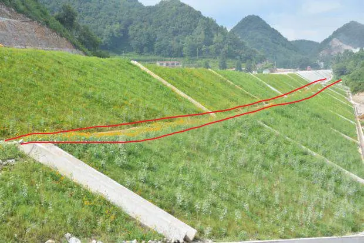
高度 H1
坡率已经填好，接下来到高度 H1、H2，H1 也就是上部高度最高的范围，意思就是，如果你填土是在 6m 以下，那么就只有一个坡就好，不用设置台阶，如果超过了 6m，那么纬地就会开始设置一个台阶了。
有同学可能会问，规范的表格上不是写着 H 小于等于 8m 吗？你为什么要设置成 6m？
这是需要做边坡稳定性计算了，意思就是，我其实也不知道要设置多少才好，只知道 8m 以内可以不用做台阶，可是这是地质条件良好的情况下的，如果地质不好，那么你填土不到 8m，这个坡就垮了，所以在这种地质下，很可能最高就只能到 5m,6m，如果要继续填土，那么就需要设置一个台阶，来缓冲一下。
那么如何做边坡稳定性计算，那又是另一本书的故事了。可以去看《公路路基设计手册》
所以规范是规范，是理论情况，需要根据实际情况来设计，这里，每个人的设计水平就开始有所区分了，如果你依然是不管不顾，就用规范上的最大值，那么你这个设计就会出问题，如果只是学校里面的作业，那也就罢了，毕竟没有实施下来，如果是实际工程，你随便这样设计，那么就会出大问题。
所以，设计也没有想想中那么简单，我们使用软件倒是很容易。
W1
还有一个就是 W1,W2 的宽度，是什么？
W1 是边坡平台，W2 是护坡道。边坡平台都知道，设置边坡平台一来可以增加边坡的稳定性，还可以便于施工。
然后，在坡脚的地方就是护坡道了。这两个的取值一般在 1-2m。
如果填方或者挖方太高，最低要求是 2m。填高超过 20m，就需要做边坡稳定性验算，然后设计挡墙、护坡脚等之类的防护设置。
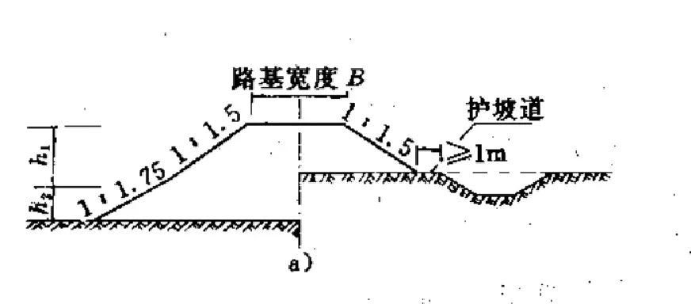
挖方边坡设置
接下来是挖方边坡：
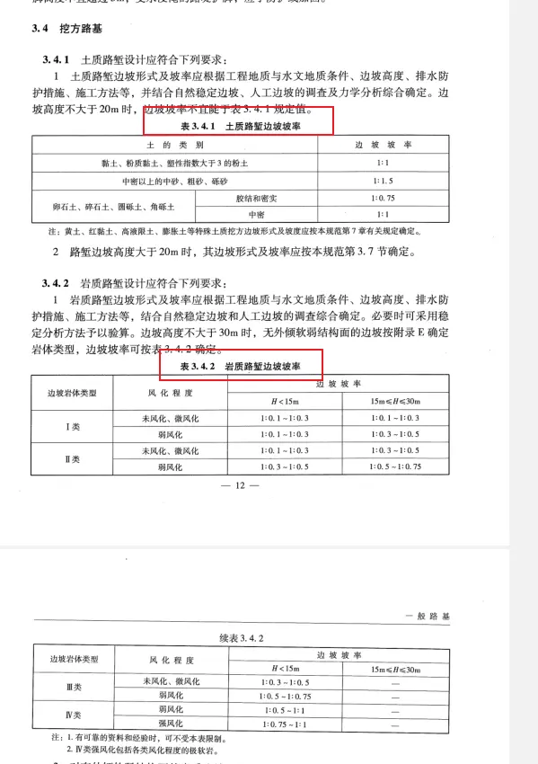
挖方边坡的设置和填方的类似。不过，因为是挖的，是土质还是岩质，是看当地的地质情况，土质的坡率可以稍微大一点，岩质坡率要缓一点。
如果你做的是课程设计之类的，没有地质相关的资料，那么就默认选土质的吧，或者你也可以使用搜索引擎搜索看看那个地方的地质情况。这里坡率就选 1:1.5。高度就按纬地默认的高度，如果你要修改那么 H1 可以写成 8m，H2 是 12m。8m+12m=20m 已经是深路堑了。
这里为什么又可以按规范上的，而不是改成 6m，这就是体现自己设计的思考了，不然老按规范，那么这个设计向导做到第二步，就直接一直点下一步，看都不用看了，还查什么规范。人家就是按规范建议填入的，那随便找一个会操作软件的人，都可以设计公路了。
然后接下来是碎落台和边坡平台，碎落台是防止有碎石之类的掉进边沟，影响排水，所以呢需要设置 1-2m 宽的碎落台，一般设置 1m 就差不多了。
边沟和排水沟设置
关于边沟，二级公路排水量相对少，所以一般都是设置矩形边沟，然后是 40x40cm 的，如果是一级公路以上或者是该地降雨量较多，排水需求大的，才是 60x60 的矩形边沟，或者梯形。干旱的地方就 30x30cm。
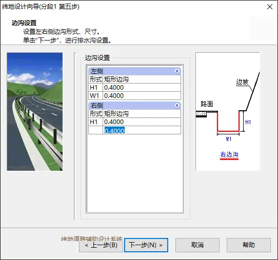
排水沟也一样，如果你设置梯形的：
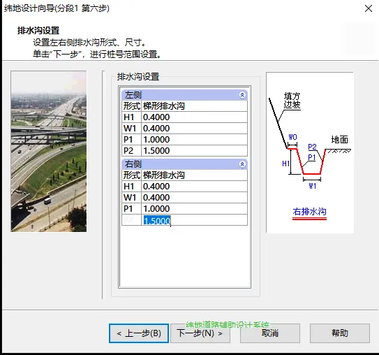
内侧边坡(靠近道路一侧，如图上的 P2)一般为 1:1~1:1.5 之间，外侧边坡(靠近山体一侧，如上图的 P1)通常和挖方边坡的坡率一致。
曲线超高设置
点击下一步，到超高加宽设置：
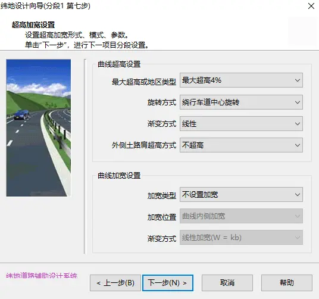
先看最大超高值的设置：
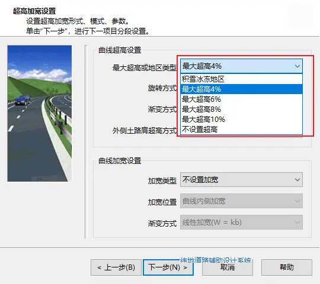
我们重新翻开《公路路线设计规范》：
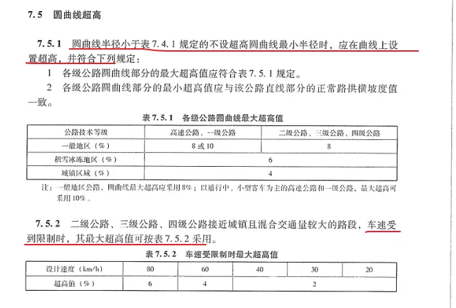
之前我们设置园曲线半径的时候，说如果园曲线半径大于一定值的时候，可以不设置超高，如果不记得可以往回翻一下平面选线那一章。
我们首先判断自己要不要设置超高，如果设置，那么就按上图中的综合来选，比如说一般地区的二级公路，最大超高是 8%，然后加上车速限制，比如 60km/h，那么最大超高值就只能是 4%。综合起来就只能选 4%。
旋转方式
这一点，还是继续往下翻规范：
首先我们要看懂这个内侧和外侧是什么意思，恩，怎么说呢，超高我想大家都知道是什么意思，就是把路的一边抬高，以防车受离心力的影响飞出去，抬高的那一侧就是外侧，低的那一侧是内侧。
然后纬地的用词和规范的用词有点出入，规范是：
绕内侧车道边缘旋转、绕路中线旋转、绕外侧车道边缘旋转。
纬地上是：
绕行车道中心旋转、绕曲线内侧路基边缘旋转、绕曲线内侧行车道边缘旋转。
这里先给结论，然后下面给出我的解释：
绕内侧车道边缘旋转=绕曲线内侧行车道边缘旋转。
绕路中线旋转=绕行车道中心旋转；
绕曲线内侧路基边缘旋转=绕外侧车道边缘旋转。
前面两条可能比较好理解，就是最后一条有点争议，大家可以看看我下面的论证过程。
论证过程
我们按规范所写的名词为标准来理解这三种旋转方式：
先理解第一个：绕内侧车道边缘旋转，看图理解：
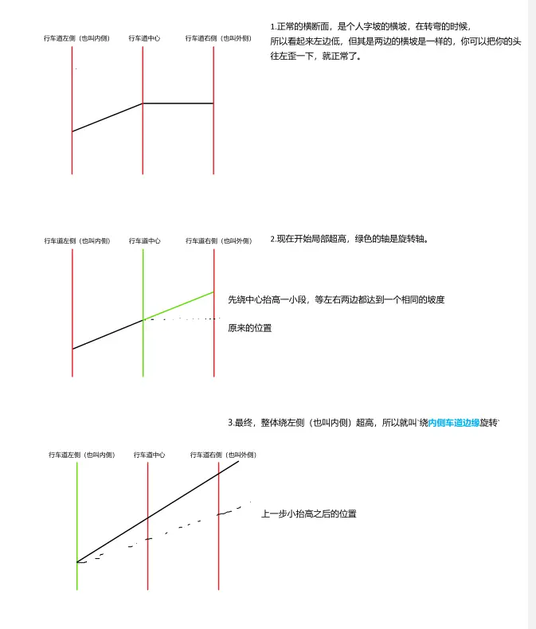
也就是说，最终是绕内侧车道边缘旋转。
然后第二个绕路中线旋转：
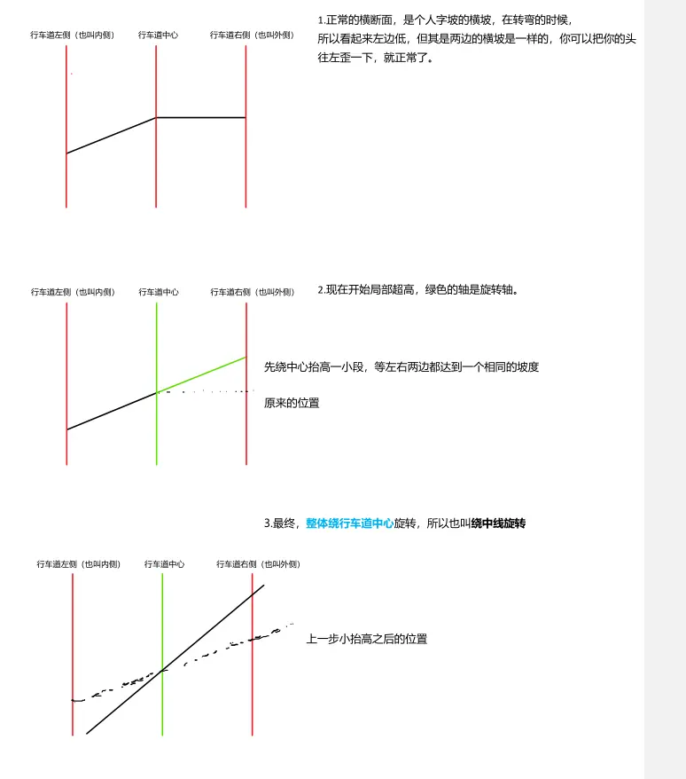
前面两步一样的，只是这种方式最后是绕行车道中心旋转的，所以
这种超高方式就叫绕中线旋转。
第三个方式绕外边线旋转，这个比前面这两个稍难理解点：
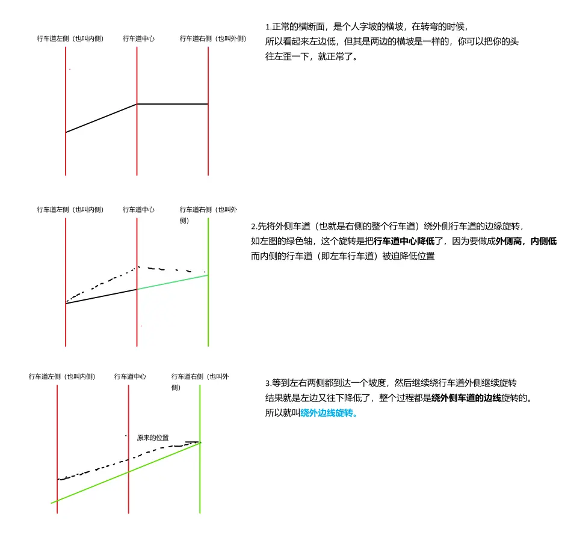
第二步，右侧的行车道绕最右侧的边缘旋转，是降低的旋转，因为最终要做成外侧高，内侧低。而路基是整体式路基，所以呢，左侧的就自然跟着右侧的走。
然后现在来看看这个纬地上的名词，
先看纬地上的第一个：绕曲线内侧路基边缘旋转方式
这个我有点懵了，我们翻开纬地的帮助文档看看，这里纬地说的绕曲线内侧路基边缘旋转，这个旋转轴是在路基边缘。
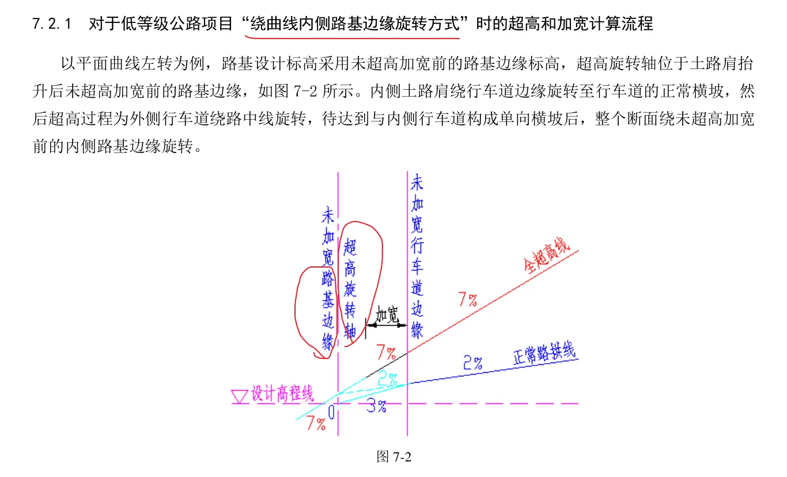
我们看到这个最终的旋转轴是在内侧路基边缘旋转的，不过规范上说如果路基外缘高程受限制时，可以采用绕外侧行车道边缘的旋转方式，所以按我的理解，绕内侧路基边缘这种方式是绕外侧行车道边缘的理想情况，两者可以替代。前者更优，当然这里可替代是我个人的看法，如果有误，各位读者请多多指正一下。
接着第二个：绕曲线内侧行车道边缘旋转方式
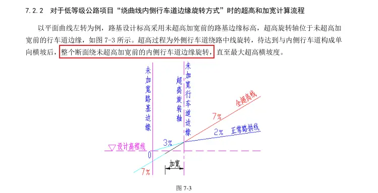
这个应该不用多解释了，如果你看了之前我对规范上三个旋转方式的解释，分清路什么是内侧，什么是外侧，就很容易看出来，这个就是绕内边线旋转的方式。
然后最后一个：绕行车道中心旋转方式，这里也贴上纬地帮助文件的图：
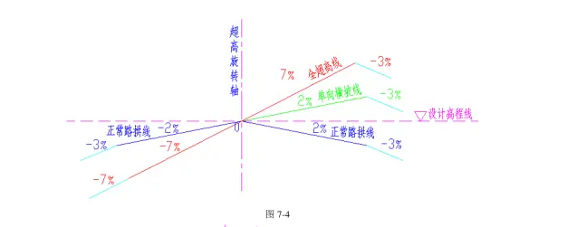
这种旋转方式容易理解，反正就是绕着中心转嘛，这里有一点需要注意，就是绕中央分隔带边缘旋转方式，在纬地上可以选绕行车道中心旋转方式 这种方式。
渐变方式
7.5.7 给出，超高过渡一般采用线性过渡方式。
土路肩超高方式
土路肩一般选择不超高，而硬路肩超高一般和行车道一致。
曲线加宽设置
园曲线的加宽应该根据公路的交通组成确定。
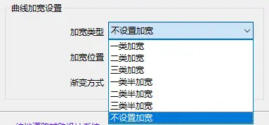
我们继续查看规范：
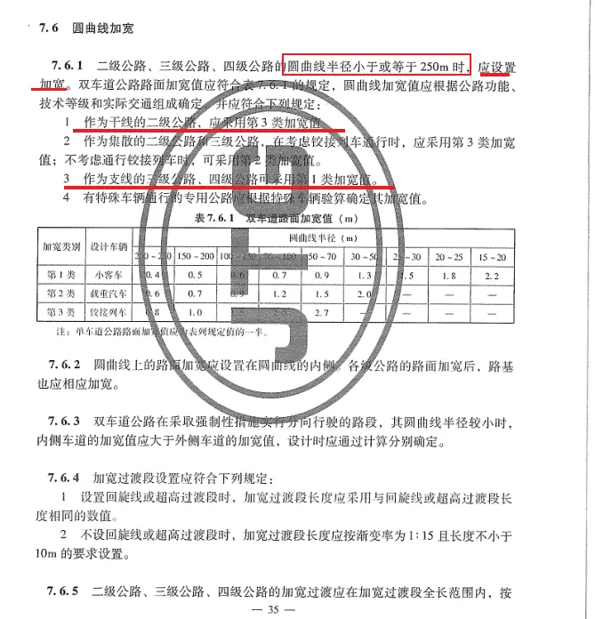
首先要判断你设计的公路需不需要加宽，二级、三级公路、四级公路且园曲线半径小于或等于 250m 的时候，才需要设置加宽，如果你是高速公路、一级公路什么的，就不需要设置加宽路，因为你全程都很宽。
这里我设计的例子是二级公路，无论是作为干线还是集散，都是 3 类加宽。其它的可以查看一下规范，以及《道路勘测设计》第四版（或者更新的版本）查。
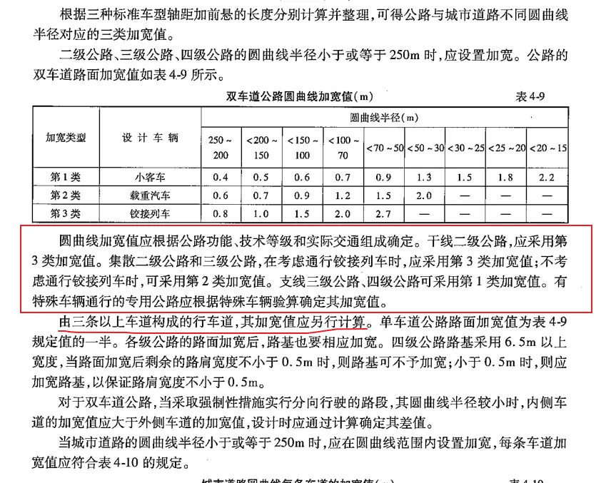
来自《道路勘测设计》第四版截图
然后是加宽位置，不管你是哪种，都只能选曲线内侧加宽。(在纬地上)
加宽过渡有线性加宽和高次抛物线加宽。二、三、四级公路一般选线性加宽，高速公路和一级公路选高次抛物线加宽，至于几次你就自己决定吧。还有些高速公路、一级公路、二级公路的一些特殊路段，是用回旋线加宽。
到这里，超高和加宽的数据怎么查询规范，就已经做好了。
现在继续纬地的下一步：
点击自动计算超高加宽：
这里都没有红色数据报错。
如果有某一行报错了，那么大多就是选线的时候出问题了，你设计的路线不合理，需要重新调整，比如说你的园曲线半径和缓和曲线的数值，不满足规范的要求，这种情况较多见，你就需要重新回去选线了。
如果你选线的时候，特别是设计园曲线的半径、缓和曲线的时候，都是满足规范的，然后做设计向导，也都是按规范填入的，那么到这一步基本上是不会报错的。
点击下一步：
就会生成 4 个文件，就是你刚才填入的那些数据，软件自动计算完了，然后保存到文件里面。点击完成即可。
如果点击完成之后，软件出现致命错误，那就重新做一遍就好。重新不行就重启电脑，再重新开始，这没什么，只有第一次查询规范的时候才需要话费很大的力气，之后的基本上就没有什么了，都是软件常规操作而已。
出现问题，多重做几遍，看看是不是哪一步出问题了，步骤没错就是软件的问题。
好，做了这么久，我们也该休息一下了，这时候，关闭软件之前，点击保存一下项目就可以，然后就可以退出了。
如果你点击保存项目之后，随便点了鼠标，你退出的时候还会弹出项目已修改，是否保存，你点击是也可以，否也可以；因为刚才的改变是因你滚动了鼠标，你只要确保做完设计之后，第一时间保存项目，而且后面没有做关于设计的任何操作，那么都可以忽视这些提示。